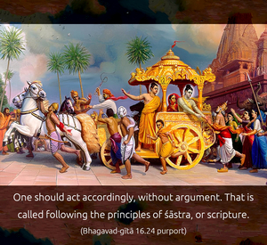
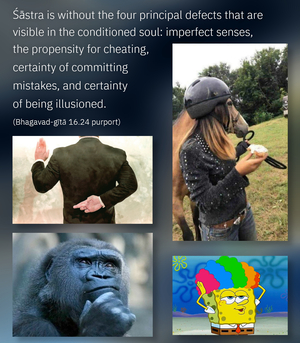

One should therefore understand what is duty and what is not duty by the regulations of the scriptures. Knowing such rules and regulations, one should act so that he may gradually be elevated.




As stated in the Fifteenth Chapter, all the rules and regulations of the Vedas are meant for knowing Kṛṣṇa. If one understands Kṛṣṇa from the Bhagavad-gītā and becomes situated in Kṛṣṇa consciousness, engaging himself in devotional service, he has reached the highest perfection of knowledge offered by the Vedic literature. Lord Caitanya Mahāprabhu made this process very easy: He asked people simply to chant Hare Kṛṣṇa, Hare Kṛṣṇa, Kṛṣṇa Kṛṣṇa, Hare Hare/ Hare Rāma, Hare Rāma, Rāma Rāma, Hare Hare and to engage in the devotional service of the Lord and eat the remnants of foodstuff offered to the Deity. One who is directly engaged in all these devotional activities is to be understood as having studied all Vedic literature. He has come to the conclusion perfectly. Of course, for the ordinary persons who are not in Kṛṣṇa consciousness or who are not engaged in devotional service, what is to be done and what is not to be done must be decided by the injunctions of the Vedas. One should act accordingly, without argument. That is called following the principles of śāstra, or scripture. Śāstra is without the four principal defects that are visible in the conditioned soul: imperfect senses, the propensity for cheating, certainty of committing mistakes, and certainty of being illusioned. These four principal defects in conditioned life disqualify one from putting forth rules and regulations. Therefore, the rules and regulations as described in the śāstra – being above these defects – are accepted without alteration by all great saints, ācāryas and great souls.
In India there are many parties of spiritual understanding, generally classified as two: the impersonalist and the personalist. Both of them, however, lead their lives according to the principles of the Vedas. Without following the principles of the scriptures, one cannot elevate himself to the perfectional stage. One who actually, therefore, understands the purport of the śāstras is considered fortunate.
In human society, aversion to the principles of understanding the Supreme Personality of Godhead is the cause of all falldowns. That is the greatest offense of human life. Therefore, māyā, the material energy of the Supreme Personality of Godhead, is always giving us trouble in the shape of the threefold miseries. This material energy is constituted of the three modes of material nature. One has to raise himself at least to the mode of goodness before the path to understanding the Supreme Lord can be opened. Without raising oneself to the standard of the mode of goodness, one remains in ignorance and passion, which are the cause of demoniac life. Those in the modes of passion and ignorance deride the scriptures, deride the holy man, and deride the proper understanding of the Supreme Personality of Godhead. They disobey the instructions of the spiritual master, and they do not care for the regulations of the scriptures. In spite of hearing the glories of devotional service, they are not attracted. Thus they manufacture their own way of elevation. These are some of the defects of human society which lead to the demoniac status of life. If, however, one is able to be guided by a proper and bona fide spiritual master, who can lead one to the path of elevation, to the higher stage, then one’s life becomes successful.